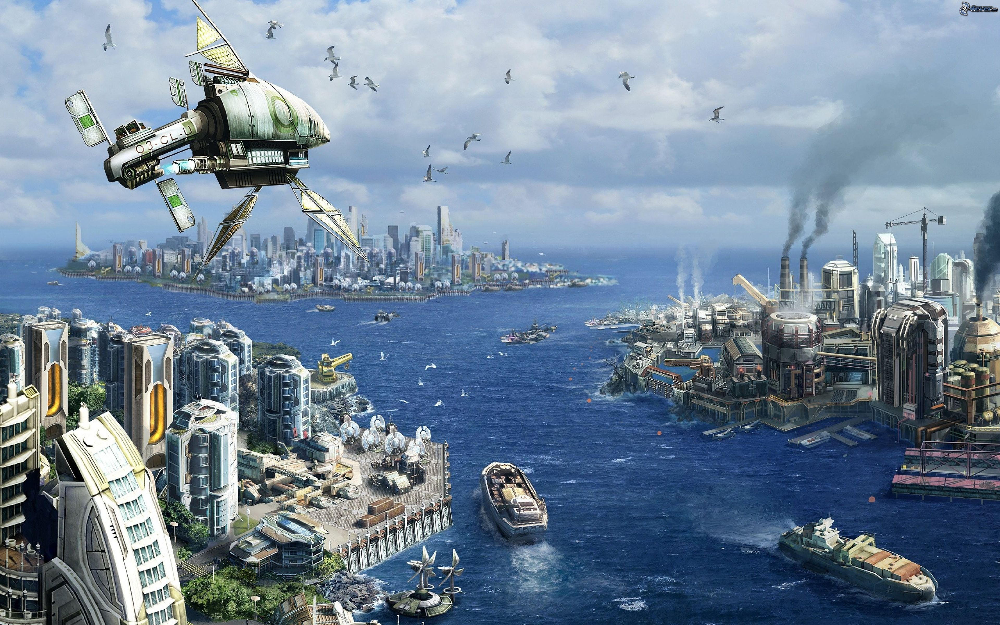
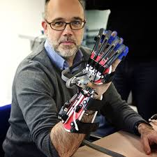
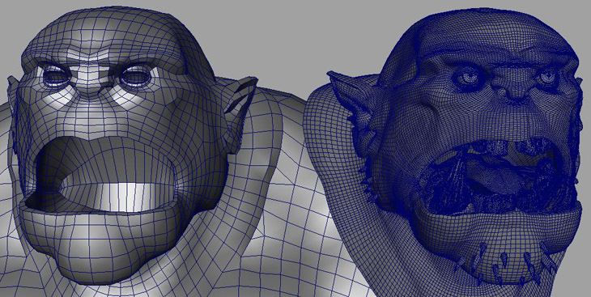
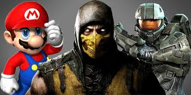

03 de Febrero 2017 por Neil David Linares P.
Avances tecnologicos en pro de la revolución de la humanidad. La tecnología no adquiere atributos como bueno o malom esos adjetivos se los entrega nosotros los usuarios, la mayoría de los saltos tecnologicos se dan principalmente por acciones bélicas como ......
Avances tecnologicos en pro de la revolución de la humanidad. La tecnología no adquiere atributos como bueno o malom esos adjetivos se los entrega nosotros los usuarios, la mayoría de los saltos tecnologicos se dan principalmente por acciones bélicas como fue la segunda guerra mundial con hipersalto en la aviacion , comunicación , combustibles sinteticos y un sin fin de avances que despues pasan a ser uso civil pero dentro de las mentes de gente visionaria y altruista ven en la tecnología del mañana la esperanza del presente, aunque se espere que no sea un arma de doble filo como fue el caso de alfred nobel que su invento el cual nace como mejoramiento de las operaciones mineras y de creacion de tuneles a menor costo y tiempo , en las armas más usadas por el hombre para causarse males, por eso concluyo estos articulos se centran en el esparcimiento del saber lo que dicho conocimiento como se torne en ustedes eso depende del uso que le den
03 de Febrero 2017 por Neil David Linares P.
Desde la invención de Johannes Gutenberg : "La imprenta" es con dicho invento que hizo que el mundo cambiase radicalmente al no limitar el saber leer a las altas esferas cuyo poder adquisitivo le permitia solventar las costosas sumas de dinero que involucraba educarse y tener acceso a materiales bibliograficos ya que para la epoca las copias de libros eran hechas a mano por eso el tiempo largo de produccion y el alto costo de produccion.
Ahora que nosotros tenemos un mundo de información al alcance de un click ya que ni el idioma es barrera para aprender y con los grandes comunidades quienes comparten con gusto el saber a cualquiera que tenga las ganas de aprender y con esfuerzo afianzar dichos conocimientos para llevarlos a un grado donde aflore la creatividad, el conocimiento es poder y poder es de todos
Leer más...

03 de Febrero 2017 por Neil David Linares P.
Desde las épocas donde el hombre empezo a cuestionar su entorno y preguntarse es donde nacen mentes privilegiadas con una visión que incluso ahora sorprende como Jules Gabriel Verne escritor de grandiosas obras inspiradas en la pura imaginación que despertarón el ínteres de las futuras mentes con temas tales como viajes fantasticos como destino a la luna o el centro de la tierra o alrededor de ella con un grado casi apegado a la realidad actual como la idea de verne de usar barras quimicas con propiedades luminicentes ya que con el fuego no se podria explorar las cuevas y lo que en la actualidad los espeleologos usan en sus viajes a las cuevas como luces quimicas, como estas obras de ciencia ficcion hay varias como el universo de Star Wars o Gataca donde el racismo sera genético son obras de cine que dan pie a que otros sigan soñando y deleitando a las futuras generaciones.

03 de Febrero 2017 por Neil David Linares P.
Lo primero que la mayoria se le viene la palabra robotica son R2-D2 del universo de Star Wars o robot futuristas con inteligencia como la pelicula Chappie donde nos podemos cuestionar sobre que es la conciencia y la personalidad sino que el cumulo de memorias manejadas por nuestra humanidad y/o codigo de ético pero sin tanto eufemismo en resumen es información la cual puede ser transferida, pero más allá de pensar en cosas como la pelicula terminator se penso en las 3 leyes de Isaac Asimov en pro del bienestar humano , pero hay robot que nos ayudan a curar tal como lei en un artículo donde se usa robots para la estimulacion o implantes roboticos de alto grado de sensibilidad que devuelven la funcionalidad del paciente tanto que en las olimpiadas se cuestiono si era justo competir personas que disponian de una discapacidad y usaban protesis de alta calidad con materiales alucinantes que se ve en transbordadores de alta ligereza y durabilidad , que se crearon nuevas divisiones para aquellos super humanos.
Leer más

03 de Febrero 2017porNeil David Linares P.
Con el avance tecnologico de los computadores modernos como caracteristicas principales como su potencia y bajo costo hace que las animaciones cojan un nivel de foto realismo que no se puede distinguir la realidad de la ficción sin contar con los nuevos dispositivos de realidad virtual el cual nos lleva a un mundo completamente fuera de precedente, peliculas como Avatar cuya pelicula casi en su totalidad es digital escenarios , fauna, flora hasta incluso idioma navi , junto con sonido dts hace que uno no pueda evitar dejar se llevar , animaciones en 3d son lo resaltante pero que hay del 2d es su fin, en lo personal lo dudo ya que como todo arte depende de la intensidad del guion , argumentos , personajes . Un ejemplo clasico es Batman serie animada cuyo nivel de dibujo no es espectacular pero si muestra una ciudad modelo como las que hay en la actualidad .
Una animacion de calidad es aquella que te roba un suspiro, un grito , una emoción.

03 de Febrero 2017 por Neil David Linares P.
Desde los primeros pixeles de pong el mundo de los videojuegos fue menos preciado a tal grado que nadie hubiera previsto que este mundo generaria las mayores ganancias , mucho más que cualquier pelicula taquillera.
Todo comenzo cuando aplicaron una trama a los juegos cuyo representante y pionero fue Mario World, un juego con trama, objetivo, personajes definidos y un universo conformado por tuberias y avatares que te otorgan superpoderes fue el boom incluso ahora se crean MOD haciendolo más diverso, pero se puede considerar arte a los videojuegos , con el paso que de hecho que si ya que alberga los mismo detalles de concepto como una pelicula o libro donde se tiene una trama , guion, personajes , ambientación , hasta incluso actores de verdad los cuales dan las voces o capturas de pantalla de sus gestos para darles un alto realismo a los animaciones 3d juegos que te hacen creer que eres espia como la saga metal gear o un peleador de artes marciales como en la saga tekken o algo más sadico como DOOM donde el exito es tomar la iniciativa , los juegos no solo se evaluan en sus aspectos graficos o linea argumental sino cosas como estabilidad en los frame, efectos fisicos , maniobrabilidad y otros detalles que varian dependiendo del genero y es que si hablamos de genero por que es tan amplio los usuarios que tienes desde los que juegan candy crash o pokemon go , a los profesionales que pelean en torneo como starcraft que en korea son como los rockstar o counter strike , no es de sorprendernos que algun dia sea reconocido como arte como tal ya que en cada obra tiene su sello personal